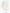

深圳南山 · 2026 · 北京时间 UTC+8
一天的光，
走进家的路径。
选择节气，拖动时间，从日出看到日落。光线依照太阳方位变化，穿过参考户型的窗与阳台开口。
夏至 · 参考日照
拖动旋转 · 双指缩放
当前浏览器无法显示 3D，太阳轨迹和日出日落时间仍可查看。
橙色地面＝直射灰色地面＝无直射周边遮挡假设参考底模 · 非现场实测
03 / 太阳轨迹
从日出到日落
曲线表示太阳高度角；深色区段表示前方高层情景中可能被遮挡。
06:00正午18:00
方法与边界
如何理解这张图
房间采用你此前提供的同户型 7 楼三维底模，顶板按模型 2.8 米示意；20 楼墙线、窗、梁与飘窗仍待复尺。主阳台按你给出的“约西北”方向放置，未有罗盘实测角度。
太阳以深圳南山区四舍五入的坐标（22.53°N，113.93°E）和 NOAA 公式计算。橙色地面表示模型窗洞与墙体下的直射范围；天气、玻璃透光率、栏杆与家具不计入。
周边楼盘资料确认相邻公寓为两栋 30 层；腾讯地图楼栋位置与既有阳台视频用于判断它在视野左侧。楼顶高度、窗到近立面间距与真北方位仍是估计，不能作为采光鉴定或施工依据。